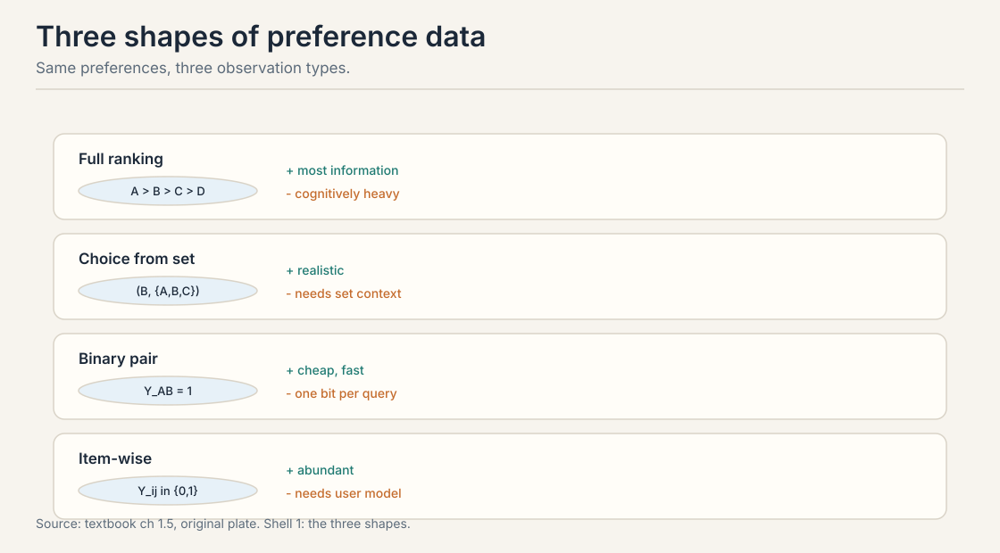
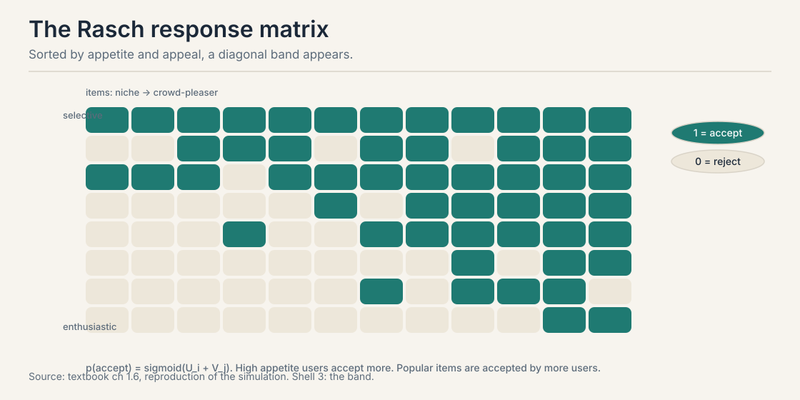
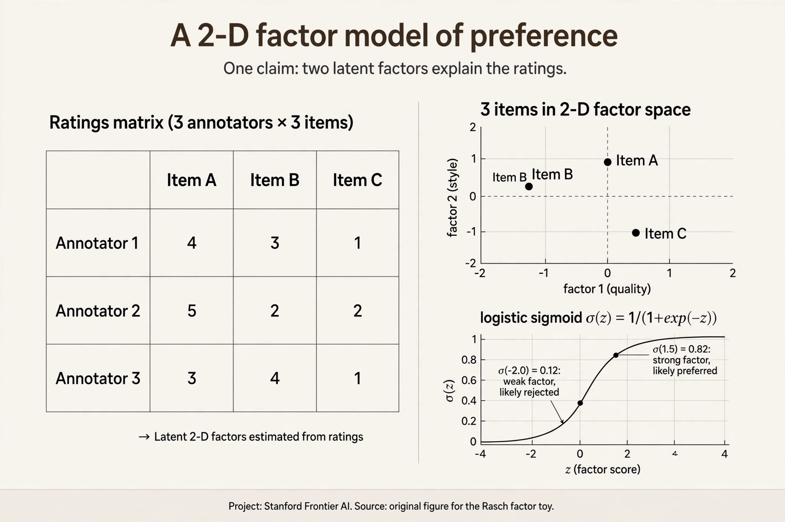
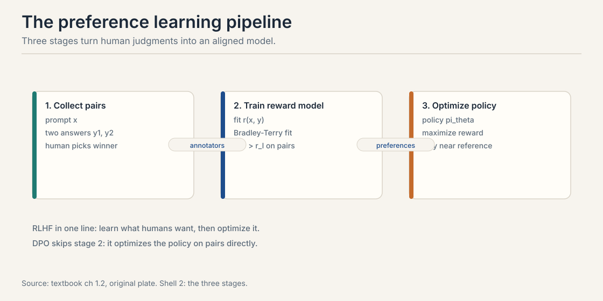
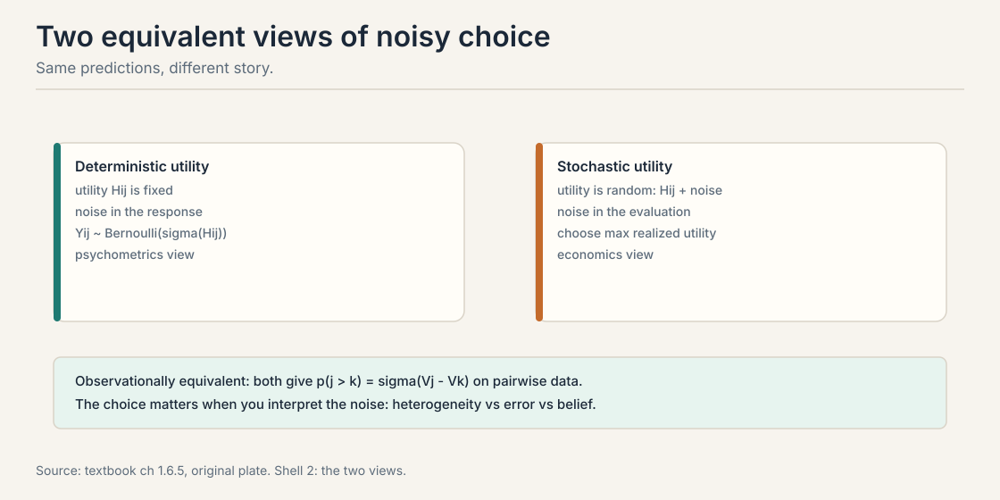

Lecture 1: Why Preferences, and the Language Model Running Example
Video blocked (ad-blocker or local file mode).
Watch on YouTubeVideo not loading? Watch on YouTube
Course introduction lecture (Stanford Online, Autumn 2024). Sanmi Koyejo sets up the preference learning problem. Verified live on YouTube.
The Autumn 2024 Introduction lecture video is embedded above. This chapter follows the course textbook, chapters 1.1 through 1.6, which the course plan maps to its opening lectures. Lecture-specific examples or timestamps are not claimed. Anything the textbook does not say is marked [uncertain] or omitted.
The problem: prediction is not behavior
Train a language model to predict the next token on a trillion words. It becomes a superb predictor. Now ask it to be a good assistant. The predictor has a failure built in. It continues any prompt, including a harmful one. Prediction measures what text looks like. Behavior asks what the model should do. The two are different jobs.
Here is the concrete gap. A user asks for instructions that help with wrongdoing. The predictor’s training data contains such instructions. It answers fluently. Nothing in next-token prediction taught it to refuse. The data never contained a label that said “refuse this.” Capability came from prediction. Behavior needs a different signal: human judgment about which output is better.
That signal is a preference. A preference is a comparison: this response beats that one, for this prompt. This chapter builds the machinery that turns such comparisons into trained models. It opens the course arc: comparisons, choice models, fitting, asking well, acting, and aggregating. Every later lesson stands on this one.
First attempt: ask people for scores
The obvious fix is to ask humans to rate responses. Show an annotator a prompt and two candidate answers. Ask: rate each from 1 to 10. Use the scores as training labels. This is how many early systems worked. It feels natural. It breaks in a specific, measurable way.
A score is an absolute number attached to one response. Scores need a shared scale to mean anything. People do not share scales. Watch two annotators rate the same two responses.
response X: "Delete the file with rm -rf /tmp/cache."
response Y: "You can clear the cache by deleting /tmp/cache.
This is safe because it only holds temp files."
annotator A: X -> 7, Y -> 5
annotator B: X -> 9, Y -> 7
Both annotators agree on the gap: X beats Y by 2 points. But A is a harsh grader and B is generous. A’s 7 means “fine.” B’s 7 means “mediocre.” The absolute values disagree. Only the difference is shared. A training label that reads “7” carries no meaning without knowing who wrote it.
This is the calibration problem. Absolute judgments drift from person to person and from day to day. One person’s 7 is another’s 9. Relative judgments are sturdier. Ask “which is better” and people mostly agree. Ask “how good, on a scale” and the scale itself moves.
The textbook cites the psychology behind this: humans evaluate differences better than magnitudes (Kahneman and Tversky, 1979). The same response gets different scores. The same comparison gets the same answer. That asymmetry decides the whole design of the field.
Subchapter: the calibration toy, drawn
Draw the two annotators’ scales side by side. Annotator A places X at 7 and Y at 5. Annotator B places X at 9 and Y at 7. The absolute positions differ. The gap is 2 on both scales. Now ask what survives a change of annotator. The levels do not. The gap does.

This gives the design rule for the whole course. Never train on a number that moves when the annotator changes. Train on the thing that does not move: the comparison. Every model from here on takes comparisons as input. The sigmoid in the Rasch model below eats a difference for exactly this reason.
Where scores break: five settings, one structure
Scores fail everywhere humans judge. The textbook names five settings. Each one shows the same crack.
Recommender systems. A click on movie A instead of movie B reveals that A beat B. Netflix and Spotify learn from these revealed comparisons. Asking users to rate every movie 1 to 5 gets sparse, drifted labels. Clicks are comparisons, and they are abundant.
Information retrieval. A search engine watches clicks. Clicking the third result suggests it beat the first two, for that query. The absolute relevance of each result is never observed. Only the choice is.
Robotics. A human watches two robot-arm trajectories and picks the smoother one. Rating smoothness 1 to 10 needs a shared scale for “smooth.” Picking the smoother of two does not.
Language model alignment. Annotators compare candidate responses and say which is more helpful. This is the course’s running example. It appears in every later lesson.
Games. Chess uses the Elo rating. Each game is a pairwise comparison: which player was stronger today. No one rates a performance 8.3 out of 10. The win is the data.
All five share one mathematical structure. Comparisons or choices from sets reveal underlying preferences. One framework covers them all. The rest of this chapter builds it.
Subchapter: the five settings in production
Each setting has a deployed system running the comparison machinery. Facts below are verified against public sources, current as of October 2026.
Recommenders: implicit feedback. Production recommenders train on implicit comparisons: a click on item A over item B is a revealed pairwise preference. The Bayesian Personalized Ranking paper (Rendle et al., 2009) made the pairwise log-loss on implicit feedback the standard objective. No star ratings needed.
Information retrieval: click models. Search engines fit click models that treat a click on the third result as evidence it beat the first two for that query. The absolute relevance is never observed. Only the choice is.
Robotics: trajectory comparisons. Christiano et al. (2017) trained robot policies from human comparisons of trajectory pairs: “which clip looks better?” The paper’s arXiv page is linked in Go deeper. No reward function was written by hand. The comparisons were the reward.
LLM alignment: the pair datasets. Two public datasets anchor the field. The Stanford Human Preferences (SHP) dataset collects Reddit preference pairs. The Anthropic HH-RLHF dataset, built with reinforcement learning from human feedback (RLHF), collects helpfulness and harmlessness comparisons. Both are linked live in Go deeper. Every open preference-tuning run starts from pairs shaped like these.
Games: Elo and Bradley-Terry. Chess federations publish Elo ratings: each game is a pairwise comparison, and the update is the online Bradley-Terry rule from Lecture 4. LLM evaluation moved the same way. LMArena’s public leaderboard post, dated December 2023, says the team adopted the Bradley-Terry model fitted by maximum likelihood on pairwise votes, replacing the raw online Elo update. The link is in Go deeper. Same atom, from chess clocks to chatbot arenas.
Learning a model of what humans want from observed choices. The data are comparisons: A beat B, item j was chosen from a set, user i accepted item j. The model is usually a utility function: each item gets a number, and higher numbers win more often. Recommenders, search, robotics, LLM alignment, and Elo ratings all reduce to this shape. Absolute scores are poorly calibrated. One person’s 7 is another’s 9, as the two-annotator toy shows. Relative judgments (A beats B) are easier for humans and more consistent across people. The textbook cites Kahneman and Tversky (1979): humans evaluate differences better than magnitudes.
The key question
If absolute scores are uncalibrated but comparisons are stable, what if we stop asking “how good” and only ever ask “which is better”?
The three shapes of comparison data
Drop scores. Keep comparisons. Every preference observation in this course takes one of three shapes. The shape decides what you can learn and what it costs.

Binary pairs. Show two items. Record the winner. One bit of information. Cheap and fast to collect. This is the LLM alignment workhorse: “which response is better?” A thousand pairs cost roughly a thousand quick judgments.
Full rankings. Ask for the complete order of several items. A ranking of M items carries M-1 staged choices, far more than one pair. But ranking is cognitively heavy. Asking an annotator to rank ten responses takes much longer than five pairwise clicks, and fatigue corrupts the later positions.
Item-wise responses. Record accept or reject per user per item: clicks, purchases, thumbs up. No explicit comparison is shown. The comparison is implicit: accepting item j means j beat the alternative of doing something else. This data is abundant but needs the richest model, because each user has their own baseline.
Binary pairs won in LLM work because they are quick to elicit. Rankings carry more per query but exhaust annotators. Item-wise data is the most abundant but needs user models.
Two pieces of notation recur all course. The context i indexes the user or situation: a prompt, a search query, a shopper. The outside option, written 0, means “none of the above”: accepting item j over the outside option is written Y_j0 = 1.
Use pairwise when you need a global ranking and users are anonymous: LLM evaluation, chess ratings, A/B tests. Use item-wise when users have persistent identities and you need personalization: recommenders, purchases, clicks. Use both when you have rich interaction data and want global quality plus personalization, like a streaming service. With M items there are M(M-1)/2 distinct pairs per user. Item-wise data needs only M responses per user. Exhaustive pairwise comparison is impractical for large catalogs, so pipelines sample pairs instead of covering them all.
The response matrix and the diagonal band
Take item-wise data and lay it out. Rows are users. Columns are items. Entry Y_ij = 1 means user i accepted item j. This is the response matrix.

Now sort the rows by acceptance rate (enthusiastic users on top) and the columns by popularity (crowd-pleasers on the right). A pattern appears. Enthusiastic users accept most items. Popular items are accepted by most users. The accept region forms a diagonal band across the matrix. This band is the fingerprint of a simple model.
The Rasch model: two numbers per entry
The band suggests that each entry depends on two things: how enthusiastic the user is, and how appealing the item is. The Rasch model (also called the 1-parameter logistic model in psychometrics) writes exactly that.
p(Y_ij = 1) = sigma(U_i + V_j)
U_i is user appetite: a number for how enthusiastic user i is. V_j is item appeal: a number for how universally liked item j is. sigma is the sigmoid function, sigma(z) = 1 / (1 + e^{-z}). It squashes any real number into the range 0 to 1, so the sum becomes a valid probability.
Watch it on a toy. A selective user has U = -1. An enthusiastic user has U = 1. A niche item has V = -1.5. A crowd-pleaser has V = 1.5.
enthusiastic + crowd-pleaser: sigma(1 + 1.5) = sigma(2.5) = 0.92 enthusiastic + niche: sigma(1 - 1.5) = sigma(-0.5) = 0.38 selective + crowd-pleaser: sigma(-1 + 1.5) = sigma(0.5) = 0.62 selective + niche: sigma(-1 - 1.5) = sigma(-2.5) = 0.08
Read the table. Enthusiasm and appeal trade off: an enthusiastic user accepts a niche item (0.38) at roughly the rate a selective user accepts a crowd-pleaser (0.62 is higher, but both sit in the middle). The sum is all that matters. Two numbers per entry explain the whole matrix up to noise. This separation, the person apart from the thing, is the founding idea of latent variable modeling.
Subchapter: factor models, when two numbers are not enough
The Rasch model gives each user one number and each item one number. It assumes everyone agrees on the order of items, up to noise. Reality disagrees. A horror fan ranks The Shining above The Hangover. A comedy fan ranks them the opposite way. One appetite number cannot hold both.
The fix: make the numbers vectors. Give user i an embedding vector U_i and item j an embedding vector V_j, each of dimension d. The acceptance probability becomes sigma(U_i^T V_j): the dot product replaces the sum. Users and items that point the same way match. The Rasch model is the special case d = 1, with the vectors reduced to scalars.

Work a 2-D toy. Horror fan: U = [1.0, -1.0] (loves horror, dislikes comedy). Horror film: V = [1.0, -0.5]. Dot product = 1.0 x 1.0 + (-1.0) x (-0.5) = 1.5. sigma(1.5) = 0.82. Comedy film: V = [-1.0, 1.0]. Dot = -1.0 + -1.0 = -2.0. sigma(-2.0) = 0.12. One model, opposite predictions for opposite tastes. This is the machinery Polis runs at scale in Lecture 10: its factor model separates rater bias, ideology, and note quality.
U_i is user appetite: a selective user has low U_i, an enthusiastic user has high U_i. V_j is item appeal: a niche item has low V_j, a crowd-pleaser has high V_j. The acceptance probability is the sigmoid of their sum. Two numbers explain the whole response matrix up to noise. Probabilities must stay between 0 and 1. The sigmoid maps any real sum to (0, 1). It also falls out of the logistic-noise derivation: thresholding a latent utility with logistic noise gives exactly this form.
Pairwise comparisons cancel the user
Here is the result that justifies the whole field. Take one user with Rasch-style utilities. Ask them to compare items j and k. The user’s appetite cancels out of the answer.
p(j preferred to k by user i) = sigma(V_j - V_k)
The U_i terms subtract away. Check it on the toy. V_j = 1.0, V_k = 0.0. The gap is 1.0. sigma(1.0) = 0.731. This holds for the enthusiastic user (U = 1) and the selective user (U = -1) alike. Both prefer j over k with probability 0.731.
This is why pairwise data is so convenient. It reveals only item differences. It cannot distinguish a world where all items are excellent and users are selective from a world where all items are mediocre and users are enthusiastic. That distinction needs item-wise data. For ranking items, pairs are enough, and they are free of the user’s personal baseline.
But note the price, honestly stated. Pairs throw away the level. If every annotator loves every response, pairs cannot tell you that. They only tell you the order.
The running example: the LLM alignment loop
Return to the opening problem with the new machinery. Post-training an LLM by human preference runs in three steps (Christiano et al., 2017. Ouyang et al., 2022).

- Collect preference data. Sample two responses to a prompt. Ask a human which is better. This produces preference pairs.
- Train a reward model. Fit r(x, y): a function that predicts which response humans will prefer. This is the fitting problem of Lectures 2 through 4.
- Optimize the policy. Fine-tune the model to maximize the learned reward while staying close to the original model. The closeness constraint fights reward hacking: the policy exploiting errors in the learned reward.
A newer simplification is DPO, direct preference optimization (Rafailov et al., 2023). It skips the reward model and optimizes the policy directly on the preference pairs. Lecture 7 derives it.
Two phases of LLM training are now clear. Pretraining predicts the next token and builds capability. Post-training aligns behavior with human preferences. Prediction builds the engine. Preferences steer it.

Pretraining predicts the next token on a corpus, which builds capability and calibrated probabilities. Post-training aligns behavior with human preferences, which prediction alone cannot do. A pure predictor continues harmful prompts happily. RLHF adds the preference step: learn a reward from human comparisons, then optimize the policy against it. Reward hacking. The policy exploits errors in the learned reward, drifting far from sensible behavior while the proxy reward keeps rising. The constraint, usually a KL penalty to the reference model, keeps the policy in the region where the reward model is trustworthy.
Start with the response matrix: rows are users, columns are items, entries are 0 or 1 for reject or accept. Sort rows by acceptance rate and columns by popularity. A diagonal band appears. Posit that each entry depends on two numbers: user appetite U_i and item appeal V_j. Set p(accept) = sigma(U_i + V_j). Fit U and V by maximum likelihood on the observed entries. To predict whether a new user accepts a new item, add their numbers and squash: sigma(1 + 1.5) = 0.92 for an enthusiastic user and a crowd-pleaser. The band in the sorted matrix is the visual check that the model fits. Then the Rasch structure is wrong for the data. Users may disagree systematically about item order, which the one-dimensional model cannot express. Move to the factor model subchapter above: give users and items vectors instead of scalars, and let the dot product capture the disagreement.
Use binary pairs, not scores and not full rankings. A pair takes about 30 seconds, so 500 hours buys roughly 60,000 pairs. Do not cover all pairs: 10,000 items make 50 million pairs, which is hopeless. Sample pairs adaptively: start with random pairs to get rough utilities, then spend the remaining budget on pairs near 50/50 under the current fit, where Fisher information peaks (Lecture 5). Include an outside option, “neither is acceptable”, so universally bad items are detected. Deduplicate near-identical responses first, or clones will distort the fit (Lecture 3). Hold out 20% of pairs for validation. A ranking of 10 carries 9 staged choices, more information per query. But ranking is cognitively heavy and slow, and fatigue corrupts the later positions. For 10,000 items the ranking task also forces comparisons between items of wildly different quality, which wastes effort on predictable answers. Pairs keep each judgment quick and let you steer the budget toward the informative ones.
The outside option, written 0, means “none of the above”. It anchors the utility scale: V_j reads as value relative to opting out, which fixes the identification problem from Lecture 3. It also detects universal failure: if annotators pick the outside option over every response, the whole candidate set is bad. Omit it and two failures follow. First, the utility level floats free, so you cannot tell universal delight from universal mediocrity. Second, forced choice between two bad responses teaches the model that one bad response is “preferred”, which poisons the reward. Add a third button next to “A is better” and “B is better”: “neither is acceptable”. Model it as the item-versus-outside special case of Bradley-Terry: p(accept j) = sigma(V_j - V_0) with V_0 = 0. Pairs where the outside option wins carry the level information that winner-loser pairs cannot.
Mapping back: what comparisons buy over scores
| Score-based attempt | Comparison-based answer | How |
|---|---|---|
| Absolute ratings drift per annotator | Pairwise labels agree | The toy: A and B agree X beats Y by 2, while their absolute scales differ |
| Scores need a shared scale | Pairs need none | Only the order matters, never the level |
| One rating = one number | One pair = one item difference | The user’s baseline cancels: sigma(V_j - V_k) |
The honest price
Comparisons are cheap and stable, but they are thin. One pair is one bit. Ranking M items exhaustively needs M(M-1)/2 pairs per annotator, which is impractical for large catalogs. Pairs discard the level: they cannot tell universal delight from universal mediocrity. And pairs discard the user: with anonymous annotators you get one global ranking, not personalization. The rest of the course is about paying these prices well: modeling the noise (Lecture 2), respecting the structure (Lecture 3), fitting carefully (Lecture 4), asking the best questions (Lecture 5), acting on what you learn (Lecture 6), and aggregating many voices (Lectures 8 through 10).
Recap: the whole lesson on one screen
The story in eight steps. Each step answers the one before it.
- Prediction is not behavior. A next-token predictor continues any prompt. Behavior needs human judgment about which output is better.
- Scores seem natural. Rate each response 1 to 10. The toy: two annotators agree X beats Y by 2 points, but one’s 7 is the other’s 9.
- Scales drift. Absolute judgments vary per person and per day. Humans judge differences better than magnitudes. The same comparison gets the same answer.
- Five settings, one structure. Recommenders, search, robotics, LLM alignment, chess Elo. All learn from comparisons. One framework covers them all.
- Ask which is better. Three data shapes: binary pairs (one bit, cheap), full rankings (rich, heavy), item-wise responses (abundant, needs a user model).
- The response matrix shows a band. Sort by appetite and appeal. Acceptances form a diagonal band. Two numbers per entry explain it.
- Rasch: sigma(U_i + V_j). User appetite plus item appeal, squashed to a probability. The toy: 0.92, 0.38, 0.62, 0.08.
- Pairs cancel the user. p(j > k) = sigma(V_j - V_k). The U_i terms subtract away. Pairs reveal order, free of personal baselines. The price: no levels, no personalization.
Go deeper
- Course lecture: https://www.youtube.com/watch?v=ApF2OenMgfc
- The Elo Rating System (Bradley-Terry derivation): https://www.youtube.com/watch?v=inXUp5j107I
- Course textbook (Truong, Haupt, Koyejo): https://mlhp.stanford.edu/Machine-Learning-from-Human-Preferences.pdf
- Christiano et al., Deep RL from Human Preferences (2017): https://arxiv.org/abs/1706.03741
- Ouyang et al., InstructGPT (2022): https://arxiv.org/abs/2203.02155
- Rafailov et al., DPO (2023): https://arxiv.org/abs/2305.18290
Official sources and further reading
Official: - Course textbook, chapters 1.1-1.6 (Truong, Haupt, Koyejo): the source of the five settings, the three data shapes, the Rasch model, and the user-cancellation result. The Lecture 1 transcript is missing. This chapter follows the textbook’s lecture plan.
Further reading: - Christiano et al., Deep Reinforcement Learning from Human Preferences (2017): https://arxiv.org/abs/1706.03741, the three-stage RLHF loop. - Ouyang et al., Training Language Models to Follow Instructions with Human Feedback (2022): https://arxiv.org/abs/2203.02155, RLHF at LLM scale. - Rafailov et al., Direct Preference Optimization (2023): paper, skipping the reward model.
Caveats from these sources. The textbook’s lecture plan maps chapters 1.1-1.6 to Lecture 1, but the actual lecture content is unverified. The Kahneman and Tversky (1979) citation is the textbook’s, not independently checked. The claim that pairwise data “won” in LLM work describes industry practice, not a theorem.
Connections to the other courses
- CS329H L02: the next chapter. Random utility, Gumbel noise, and the Bradley-Terry model: the probability machinery behind sigma(V_j - V_k).
- CS329H L07: the RLHF loop built from these pairs, and DPO, which skips the reward model.
- CS224N: RLHF and DPO from the language-modeling side, with the policy-gradient machinery.
- CS336: the transformer and pretraining that produce the base model before alignment begins.
Sources
- VIDEOCS329H Autumn 2024: Introduction (Stanford Online)
- VIDEOFull CS329H Autumn 2024 lecture playlist
- NOTESCourse textbook, chapter 1 (Truong, Haupt, Koyejo, 2025)
- PAPERChristiano et al., Deep RL from Human Preferences (2017)
- PAPEROuyang et al., Training Language Models to Follow Instructions with Human Feedback (2022)
- PAPERRafailov et al., Direct Preference Optimization (2023)